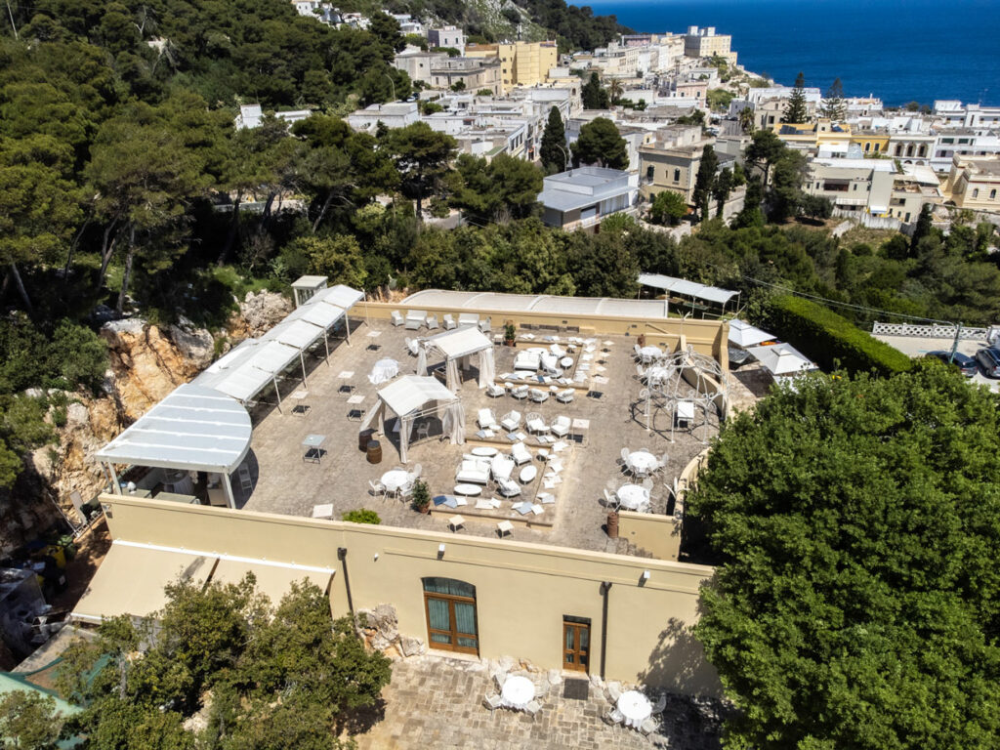
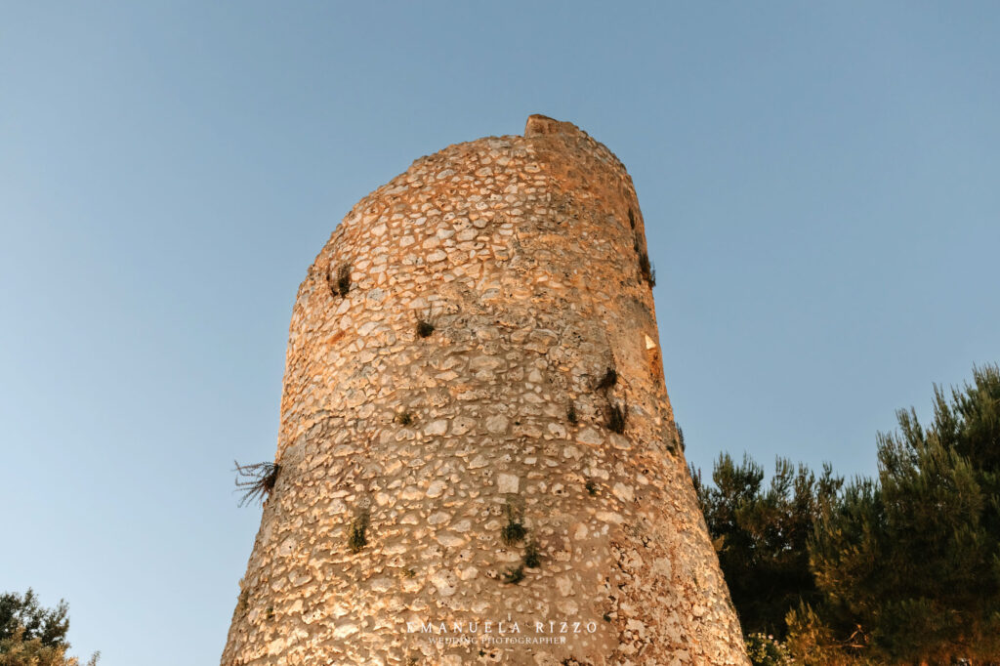
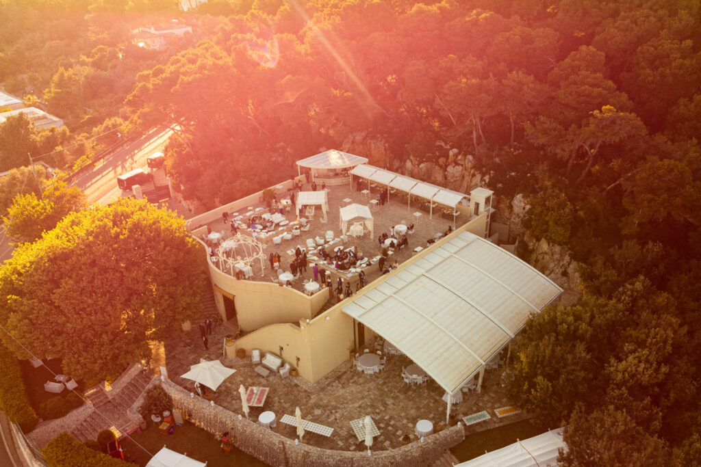

Cala dei Balcani se asoma al mar del Salento, con una vista que va de Cala di Leuca hasta los Balcanes. Con la torre sarracena a la espalda, muchas de nuestras parejas celebran la ceremonia civil frente a esa inmensidad. Se queda, en los novios y en los invitados.
Más allá de la vista, tenemos una idea concreta de lo que debe ser una boda. Viene de Francesco Urso, el propietario, que quiere que vuestro día no sea rutinario. Si buscáis una boda en la que todos estén sentados comiendo, este no es el sitio. Si buscáis una que se mueva, que implique a la gente, que sea vuestra, sí lo es.

Una boda que se mueve
Aquí una boda realmente distinta deja de ser una idea. Ponemos en el centro el entretenimiento, el disfrute y la interacción entre la gente, y nuestro equipo propio dedica a cada detalle la atención que merece.
La finca tiene rincones suficientes para que los invitados se muevan y descubran el lugar. De la ceremonia al final del banquete, todo está pensado para que participen en lugar de mirar.
Imaginad daros el sí con el mar detrás, mientras vuestros seres queridos miran al horizonte. La vista desde la torre, de Cala di Leuca a los Balcanes, ya hace buena parte del trabajo.

Una sola boda a la vez
Vuestro día merece atención completa, así que solo hacemos bodas en exclusiva. El personal de ese día trabaja para vuestra boda y para nada más. Desde que llegáis, se os trata como familia, no como clientes.
Nuestra cocina prepara todo in situ, con producto fresco y oficio. Los chefs construyen el menú en torno a lo que os gusta, y podéis cambiar cualquier detalle.
Nuestro maître os acompaña en todo momento y os lleva por los espacios: la torre sarracena, el patio panorámico, la Sala Catedral, la terraza Belvedere.

Equipo propio, no subcontratas
Tres cosas sostienen todo lo que hacemos: familia, libertad y entusiasmo. Queremos que cada pareja esté bien atendida y que cada invitado, hasta el último, se sienta cómodo. Cada persona del equipo se elige por su cuidado, su calidez y su capacidad de escuchar.
Estamos para hacer lo que tenéis en mente y para moldear cada parte del día en torno a ello — de la decoración al entretenimiento. Emocionar y divertir a vuestros invitados es lo que más nos gusta.
Vuestra boda en el Salento
Si buscáis en el Salento una boda que se recuerde, este es el sitio. La exclusividad, el equipo propio, la cocina y los espacios hacen el resto — sobre el mar, el día que más importa.
¿Queréis ver el lugar en persona?
Nuestro equipo os enseñará la finca y lo hablaremos — sin compromiso.